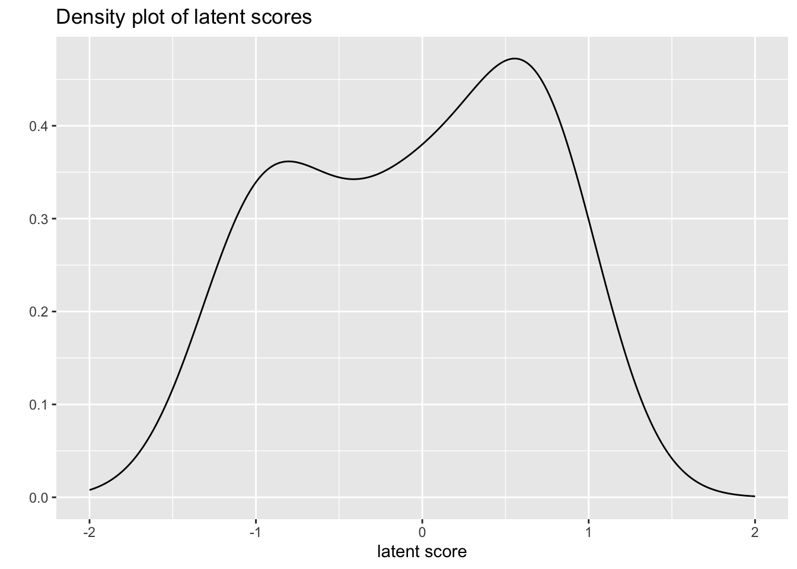
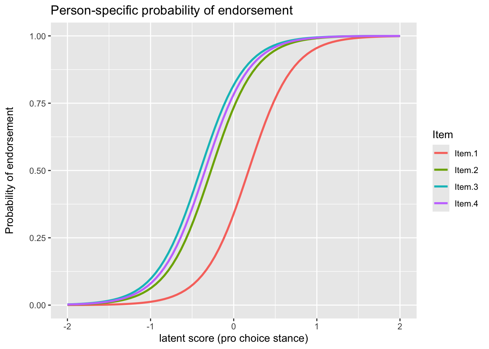

To begin, I will use the abortion data that comes with the
ltm package. I provide this non-test example so that one
will be clear that IRT is not just for test data. This data regards 379
individuals who were asked if the law should allow abortion under the
circumstances presented for each item:
Item 1: The woman decides on her own that she does not.
Item 2: The couple agree that they do not wish to have a child.
Item 3: The woman is not married and does not wish to marry the
man.
Item 4: The couple cannot afford any more children.
load("Abortion.rda")
head(Abortion)| Item 1 | Item 2 | Item 3 | Item 4 |
|---|---|---|---|
| 1 | 1 | 1 | 1 |
| 1 | 1 | 1 | 1 |
| 1 | 1 | 1 | 1 |
| 1 | 1 | 1 | 1 |
| 1 | 1 | 1 | 1 |
| 1 | 1 | 1 | 1 |
| Item | probability of endorsement |
|---|---|
| Item.1 | 0.438 |
| Item.2 | 0.594 |
| Item.3 | 0.636 |
| Item.4 | 0.617 |
The one-parameter IRT model, a.k.a. Rasch model can be expressed as follows:
\[ P(y = 1 | \theta, \delta) = logis(\theta_i - \delta_j) \]
In this setting, the probability of endorsement (nee getting an item correct), \(\pi_{ij}\) is a function of the difficulty of item \(j, \delta_j\) above, and the latent trait (ability) of person \(i, \theta_i\). In other words, it’s a specific type of logistic regression model. In the testing context, a person with more ‘ability’ relative to the item difficulty will answer correctly. In terms of the logit:
\[ logit_{ij} = log(\frac{\pi_{ij}}{1 - \pi_{ij}}) = \theta_i - \delta_j \]
There is an additional parameter, \(\alpha\), discrimination, which refers to an item’s ability to distinguish people (by ability). In the Rasch model it is held constant and in it’s original formulation it was fixed at 1.
The Rasch model can be estimated as a mixed model predicting the binary response with a fixed effect for item and a random effect for person. The only difference between the IRT model assumes the latent ability of person is distributed as standard normal, and estimates the discrimination parameter as a multiplier of that ability, \(\alpha N(0, 1)\). The mixed model on the other hand assumes that the random effects are distributed as normal with mean zero and standard deviation equal to the discrimination parameter, \(N(0, \alpha)\).
lme_rasch = glmer(Response ~ 0 + Item + (1|Subject), Abortion_long,
family=binomial(link='logit'))
summary(lme_rasch, cor=F)## Generalized linear mixed model fit by maximum likelihood (Laplace Approximation) ['glmerMod']
## Family: binomial ( logit )
## Formula: Response ~ 0 + Item + (1 | Subject)
## Data: Abortion_long
##
## AIC BIC logLik deviance df.resid
## 1472 1498 -731 1462 1511
##
## Scaled residuals:
## Min 1Q Median 3Q Max
## -2.621 -0.303 0.128 0.379 3.563
##
## Random effects:
## Groups Name Variance Std.Dev.
## Subject (Intercept) 13.9 3.73
## Number of obs: 1516, groups: Subject, 379
##
## Fixed effects:
## Estimate Std. Error z value Pr(>|z|)
## ItemItem.1 -0.667 0.277 -2.41 0.01598 *
## ItemItem.2 1.017 0.283 3.59 0.00033 ***
## ItemItem.3 1.500 0.292 5.14 2.8e-07 ***
## ItemItem.4 1.285 0.287 4.47 7.8e-06 ***
## ---
## Signif. codes: 0 '***' 0.001 '**' 0.01 '*' 0.05 '.' 0.1 ' ' 1The fixed effects for item represent item difficulty, while the latent trait for the person (nee ability) is the random effect for that person in the mixed model.
The probability of item endorsement (difficulty) is the unconditional estimated probabilities (i.e., those that ignore the individual-specific effects):
plogis(fixef(lme_rasch))## ItemItem.1 ItemItem.2 ItemItem.3 ItemItem.4
## 0.339 0.734 0.818 0.783ranef(lme_rasch)$Subject |>
as_tibble(rownames = "Subject") |>
rename(latent_score_unc = 2) |>
mutate(latent_score = latent_score_unc / lme_rasch@theta) |>
ggplot(aes(x = latent_score)) +
geom_density(adjust = 2) +
xlim(-2, 2) +
labs(
title = "Density plot of latent scores",
y = "", x = "latent score")
In a test taking context the latent score represents ability. In this context it represents some kind of individual-specific likelihood of endorsement.
The ICC plots the probability of endorsement as a function of the latent person trait, and takes on the familiar sigmoid shape due to the underlying logistic function.
left_join(
Abortion_long,
ranef(lme_rasch)$Subject |>
as_tibble(rownames = "Subject") |>
rename(latent_score = 2) |>
mutate(latent_score = latent_score / lme_rasch@theta),
by = join_by(Subject)
) |>
mutate(
fitted = fitted(lme_rasch)) |>
ggplot(aes(x = latent_score, y = fitted, color = Item)) +
stat_smooth(formula = "y ~ x", method = "glm",
method.args = list(family="quasibinomial"),
se = F, fullrange = T) +
xlim(-2, 2) +
labs(
title = "Person-specific probability of endorsement",
# subtitle = "(Estimated probabilities conditional on the individual)",
y = "Probability of endorsement\n",
x = "latent score (pro choice stance)")
In this case we can see that three of the items essentially behave identically, and in general distinguish (slightly less than average) individuals. The first item would however would take more ‘ability’ before endorsement, i.e. it is more ‘difficult’ in test taking terms, but even then it is not too different from the others. We can now start to think of the latent trait as representing a pro-choice stance, where at the average score the person would likely be endorsing all but the first item.
# A Bayesian version of the 2PM using `brms`
# https://m-clark.github.io/models-by-example/bayesian-irt.html
library(brms)
# half normal for variance parameter, full for coefficients
prior_2pm <-
prior("normal(0, 5)", class = "b", nlpar = "Z") +
prior("normal(0, 5)", class = "b", nlpar = "logdiscr") +
prior("constant(1)", class = "sd", group = "Subject", nlpar = "Z") +
prior("normal(0, 3)", class = "sd", group = "Item", nlpar = "Z") +
prior("normal(0, 3)", class = "sd", group = "Item", nlpar = "logdiscr")
formula_2pm = bf(
Response ~ exp(logdiscr) * Z,
Z ~ 1 + (1 |i| Item) + (1 | Subject),
logdiscr ~ 1 + (1 |i| Item),
nl = TRUE
)
brms_2pm = brm(
formula_2pm,
data = Abortion_long,
family = bernoulli,
prior = prior_2pm,
thin = 4,
iter = 4000,
warmup = 3000,
cores = 4,
control = list(adapt_delta = .99, max_treedepth = 15)
)
summary(brms_2pm)
# Family: bernoulli
# Links: mu = logit
# Formula: Response ~ exp(logdiscr) * Z
# Z ~ 1 + (1 | i | Item) + (1 | Subject)
# logdiscr ~ 1 + (1 | i | Item)
# Data: Abortion_long (Number of observations: 1516)
# Draws: 4 chains, each with iter = 4000; warmup = 3000; thin = 4;
# total post-warmup draws = 1000
#
# Multilevel Hyperparameters:
# ~Item (Number of levels: 4)
# Estimate Est.Error l-95% CI u-95% CI Rhat
# sd(Z_Intercept) 0.53 0.40 0.18 1.66 1.00
# sd(logdiscr_Intercept) 0.41 0.45 0.02 1.59 1.00
# cor(Z_Intercept,logdiscr_Intercept) 0.06 0.55 -0.93 0.94 1.00
#
# ~Subject (Number of levels: 379)
# Estimate Est.Error l-95% CI u-95% CI Rhat Bulk_ESS Tail_ESS
# sd(Z_Intercept) 1.00 0.00 1.00 1.00 NA NA NA
#
# Regression Coefficients:
# Estimate Est.Error l-95% CI u-95% CI Rhat Bulk_ESS Tail_ESS
# Z_Intercept 0.19 0.33 -0.40 0.85 1.00 711 762
# logdiscr_Intercept 1.48 0.32 0.91 2.10 1.00 720 699
#
# Draws were sampled using sampling(NUTS). For each parameter, Bulk_ESS
# and Tail_ESS are effective sample size measures, and Rhat is the potential
# scale reduction factor on split chains (at convergence, Rhat = 1).Doran, Harold, Douglas Bates, Paul Bliese, Maritza Dowling, 2007. “Estimating the Multilevel Rasch Model: With the lme4 Package.” Journal of Statistical Software 20(2): 1–18.
https://stat.ethz.ch/pipermail/r-sig-mixed-models/2010q4/004668.html
https://m-clark.github.io/sem/item-response-theory.html#one-parameter-model